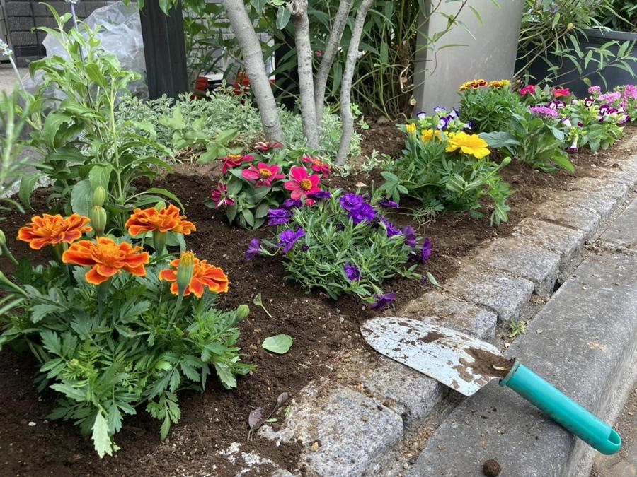
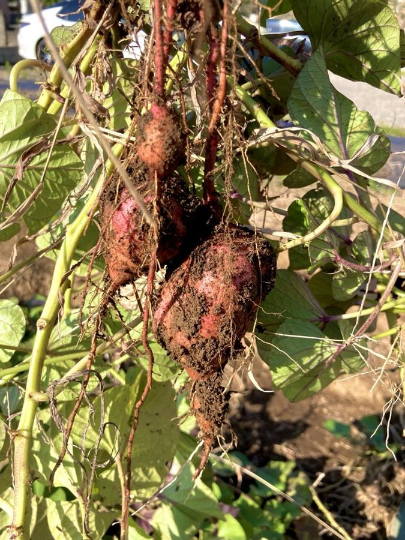
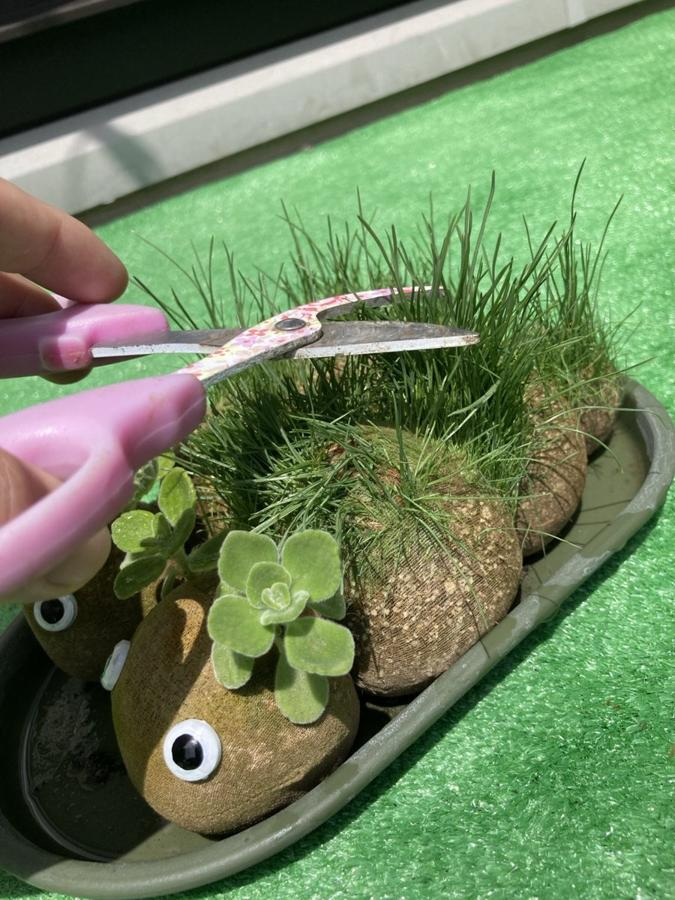

寄せ植えの日。苗と土と鉢をそろえたら、準備は終わりでしょうか？
同じ寄せ植えでも、苗がどこに置いてあるか、どんな道具を使うかで、作業のしやすさは変わります。準備をするとき、私は当日そこに座る人を思い浮かべながら、道具や材料を一つずつ見ていきます。

1. 寄せ植えの前に、何を準備する？
たとえば、苗を机に並べるとき。座ったままでも花の色や形を見比べられるでしょうか。土の袋を机の真ん中に置くと手が届きにくそうなら、小さな容器に分けて手元に置けます。鉢が動きやすければ、下に滑り止めを敷いておくこともできます。
畑で活動するときは、苗を植える場所とあわせて、そこまでの通り道や作業する姿勢も考えます。畝に着いてからどこに立つか、しゃがみ続けるのが負担なら腰かけて作業できるか。実際にその場所に立ってみると、道具を置く位置や、作業に使える広さも見えてきます。

2. 当日の様子に合わせられるようにする。
当日になってみると、疲れていて長く作業するのは難しそうなこともあります。そんなとき、苗を一つ選ぶところだけ一緒にやってみる。土を入れるところは手伝って、最後に苗を置く場所を決めてもらう。あらかじめ作業を一つずつ考えておくと、本人がやってみたいところから関われます。
そばで花を眺めていたい日も、今日は休みたいという日もあります。「どの花が気になりますか」と声をかけることもあれば、そのまま眺める時間を一緒に過ごすこともあります。どんなふうに過ごしたいかは、その日の様子を見ながら、本人に確かめたいと思っています。

3. 「準備8割」で生まれる余裕。
「準備8割」は、私が園芸療法を実践するうえで大切にしている心構えです。
道具の場所や作業の手順が頭に入っていると、花をじっくり見比べている時間や、道具に伸ばしかけた手が止まる瞬間にも目を向けやすくなります。手が止まったとき、どこに植えようか考えているのかもしれませんし、道具が少し遠いのかもしれません。少し待ってみようか。それとも「鉢をもう少し近くに置きましょうか」と聞いてみようか。相手の様子を見ながら、声をかけるタイミングを考えます。
私が準備を大切にしているのは、当日、その人のペースに合わせられる余裕を持っていたいからです。